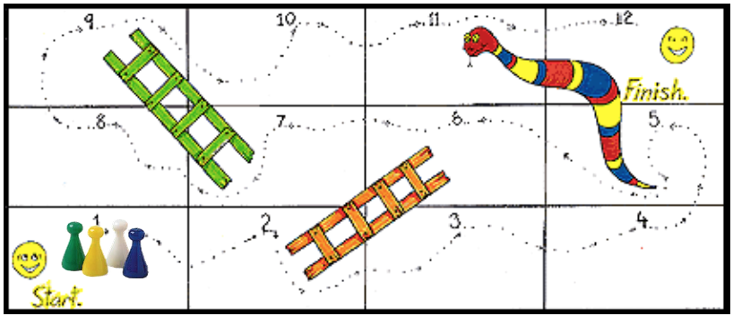
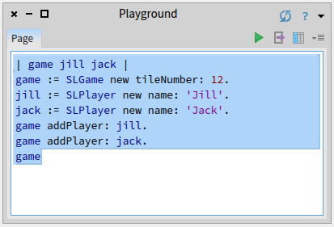
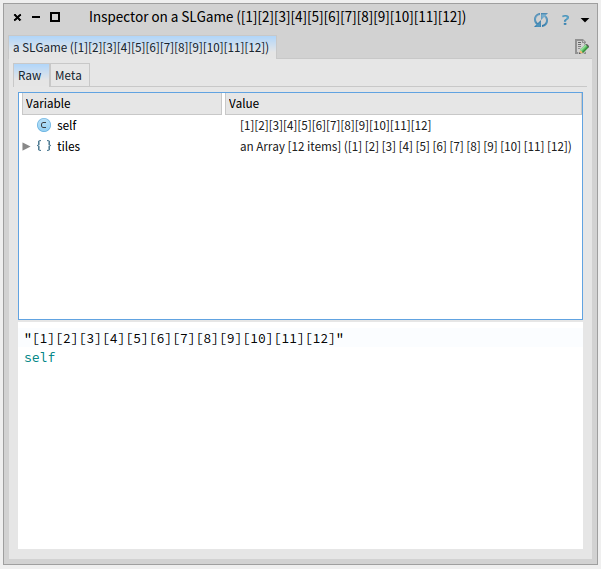
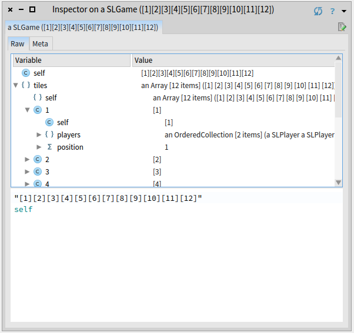
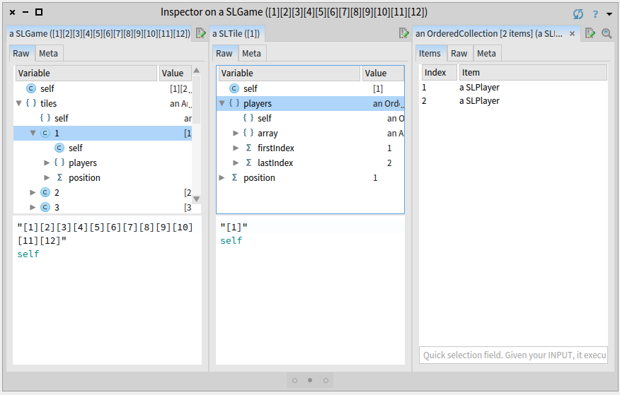
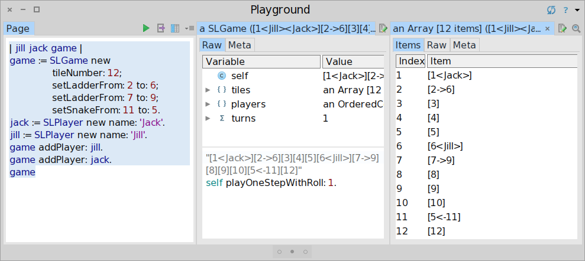
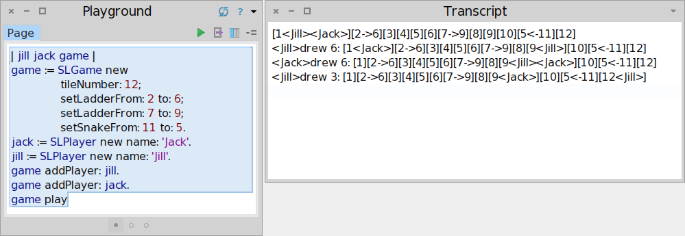

17 Snakes and ladders
Snakes and Ladders is a simple game suitable for teaching children how to apply rules (http://en.wikipedia.org/wiki/Snakes\_and\_ladders). It is dull for adults because there is absolutely no strategy involved, but this makes it easy to implement! In this chapter, you will implement SnakesAndLadders and we use it as a pretext to explore design questions.

17.1 Game rules
Snakes and Ladders originated in India as part of a family of die games. The game was introduced in England as "Snakes and Ladders" (see Figure 17.1), then the basic concept was introduced in the United States as Chutes and Ladders. Here is a brief description of the rules:
- Players: Snakes and Ladders is played by two to four players, each with her/his own token to move around the board.
- Moving Player: a player rolls a die, then moves the designated number of tiles, between one and six. Once he lands on a tile, she/he has to perform any action designated by the tile. (Since the rules are fuzzy we decided that we can have multiple players in the same tile).
- Ladders: If the tile a player lands on is at the bottom of a ladder, she/he should climb the ladder, which brings him to a tile higher on the board.
- Snakes: If the tile a player lands on is a head snake, she/he must slide down the snake, landing on a tile closer to the beginning.
- Winning: The winner is the player who gets to the last tile first, whether by landing on it from a roll, or by reaching it with a ladder. We decided that when the player does not move if he does not land directly on the last tile, it does not move.
17.2 Game possible run
The code snippet below is a possible way to program this game. We take as a board configuration the one depicted in Figure 17.1. It defines a board game composed of 12 tiles with two ladders and one snake. We add two players and then start the game.
| jill jack game |
game := SLGame new tileNumber: 12.
game
setLadderFrom: 2 to: 6;
setLadderFrom: 7 to: 9;
setSnakeFrom: 11 to: 5.
game
addPlayer: (SLPlayer new name: 'Jill');
addPlayer: (SLPlayer new name: 'Jack').
game playSince we want to focus on the game logic, you will develop a textual version of the game and avoid any lengthy user interface descriptions.
The following is an example of game execution: Two players are on the first tile. The board contains two ladders, [2->6] and [7->9], and one snake [5<-11].
Jill rolls a die, throws a 3, and moves to the corresponding tile. Jack rolls a die, throws a 6, moves to the corresponding tile, and follows its effect, climbing the ladder at tile 7 up to tile 9. Jack and Jill continue to alternate turns until Jill ends up on the last tile.
[1<Jill><Jack>][2->6][3][4][5][6][7->9][8][9][10][5<-11][12]
<Jill>throws 3: [1<Jack>][2->6][3][4<Jill>][5][6][7->9][8][9][10][5<-11][12]
<Jack>throws 6: [1][2->6][3][4<Jill>][5][6][7->9][8][9<Jack>][10][5<-11][12]
<Jill>throws 5: [1][2->6][3][4][5][6][7->9][8][9<Jack><Jill>][10][5<-11][12]
<Jack>throws 1: [1][2->6][3][4][5][6][7->9][8][9<Jill>][10<Jack>][5<-11][12]
<Jill>throws 3: [1][2->6][3][4][5][6][7->9][8][9][10<Jack>][5<-11][12<Jill>]17.3 Potential objects and responsibilities
Take a piece of paper, study the game rules, and list any potential objects and their behavior. This is an important exercise to practice, training yourself to discover potential objects and classes.
Techniques such as Responsibility Driven Design exist to help programmers during this phase of object discovery. Responsibility Driven Design suggests analyzing the documents describing a project, and turning the subjects of sentences into candidate objects, and grouping verbs as the behavior of these objects. Any synonyms are identified and used to reduce and gather together similar objects or behavior. Then later objects are grouped into classes. Some alternate approaches look for relationship patterns between objects such as part-whole, locations, entity-owner... This could be the topic of a full book.
Here we follow another path: sketching scenarios. We describe several scenarios and from such scenarios we identify key playing objects.
- Scenario 1. The game is created with a number of tiles. The game must have an end and start tiles. Ladders and snakes should be declared.
- Scenario 2. Players are declared. They start on the first tiles.
- Scenario 3. When a player rolls a die, he should move the number of tiles given by the die.
- Scenario 4. After moving the first player to a given number of tiles based on the result of a die roll, this is the turn of the second player.
- Scenario 5. When a player arrives at a ladder start, it should be moved to the ladder end.
- Scenario 6. When a player should move further than the end tile, he does not move.
- Scenario 7. When a player ends his course on the end tile, he wins and the game is finished.
Such scenarios are interesting because they are a good basis for tests.
Possible class candidates
When reading the rules and the scenario, here is a list of possible classes that we could use. We will refine it later and remove double or overlapping concepts.
- Game: keeps track of the game state, the players, and whose turn it is.
- Board: keeps the tile configuration.
- Player: keeps track of location on the board and moves over tiles.
- Tile: keeps track of any player on it.
- Snake: is a special tile that sends a player back to an earlier tile.
- Ladder: is a special tile that sends a player ahead to a later tile.
- First Tile: holds multiple players at the beginning of the game.
- Last Tile: players must land exactly on this tile, or else they do not move.
- Die: rolls and indicates the number of tiles that a player must move over.
It is not clear if all the objects we identify by looking at the problem and its scenario should be really turned into real objects. Also sometimes it is useful to get more classes to capture behavior and state variations. We should look to have an exact mapping between concepts identified in the problem scenario or description and the implementation.
From analyzing this list we can draw some observations:
- Game and Board are probably the same concept and we can merge them.
- Die may be overkill. Having a full object just to produce a random number may not be worth it, especially since we do not have a super fancy user interface showing the die rolling and other effects.
- Tile, Snake, Ladder, Last, and First Tile all look like tiles with some variations or specific actions. We suspect that we can reuse some logic by creating an inheritance hierarchy around the concept of Tile.
About representation
We can implement the same system using different implementation choices. For example, we could have only one class implementing all the game logic and it would work. Some people may also argue that this is not a bad solution.
Object-oriented design favors the distribution of the state of the system to different objects. It is often better to have objects with clear responsibilities. Why? You should consider that you will have to rethink, modify or extend your system. We should be able to understand and extend easily a system to be able to reply to new requirements.
Not having a nice object-oriented decomposition for a simple game may not be a problem, as soon as you will start to model a more complex system not having a good decomposition will hurt you. Real-life applications often have a lifetime of up to 25 years.
In addition, imagine that we are a game designer and we want to experiment with different variations and tiles with new properties such as one super special tile changing other tiles, and adding snakes before the current player to slow other participants.
17.4 About object-oriented design
When designing a system, you will often have questions that cannot be blindly and automatically answered. Often there is no definite answer. This is what is difficult with object-oriented design and this is why practicing is important.
What composes the state of an object? The state of an object should characterize the object over its lifetime. For example, the name of player identifies the player.
Now it may happen that some objects just because they are instances of different classes do not need the same state but still offer the same set of messages. For example, the tiles and the ladder/snake tiles have probably a similar API but snakes and ladders should hold information about their target tile.
We can also distinguish between the intrinsic state of an object (e.g., the name of the player) and the state we use to represent the collaborators of an object.
The other important and difficult question is about the relationships between the objects. For example, imagine that we model a tile as an object, should this object point to the players it contains? Similarly, should a tile knows its position or just the game should know the position of each tile?
Should the game object keep the position of the players or just the player? The game should keep the player's list since it should compute who is the next player.
CRC cards
Some designers use CRC (for Class Responsibility Collaborators) cards: the idea is to take the list of classes we identified above. For each of them, they write on a little card: the class name, and its responsibility in one or two sentences and list its collaborators. Once this is done, they take a scenario and see how the objects can play such a scenario. Doing so they refine their design by adding more information (collaborators) to a class or merging two classes or splitting a class into multiple ones when they fill that a class has too many responsibilities.
To improve such a process, some designers consider implementation concerns or alternatives and may create objects to represent such variations.
Some heuristics
To help us make a decision, there are some heuristics:
- One object should have one main responsibility.
- Move behavior close to data. If a class defines the behavior of another object, there is a good chance that other clients of this object are doing the same and creating duplicated and complex logic. If an object defines a clear behavior, clients just invoke it without duplicating it.
- Prefer domain objects over literal objects. As a general principle, it is better to get a reference to more general objects than a simple number. Because we can then invoke a larger set of behaviors.
Kind of data passed around
Even if in Pharo, everything is an object, storing a mere integer object instead of a full tile can lead to different solutions. There is no perfect solution mainly consequences of choices and you should learn how to assess a situation to see which one has better characteristics for your problem.
Here is a question illustrating the problem: Should a ladder know the tile it forwards the player to or is the index of a tile enough?
When designing the ladder tile behavior, we should understand how we can access the target tile where the player should be moved to. If we just give the index of the target to a ladder, the tile has to be able to access the board containing the tiles else it will be impossible to access the target tile of the ladder. The alternative, i.e., passing the tile looks nicer because it represents a natural relation and there is no need to ask the board.
Agility to adapt
In addition, it is important not to get stressed, when writing tests that represent parts or scenario we want to implement is a good way to make sure that we can adapt in case we discover that we missed a point.
Now this game is interesting also from a test point of view because it may be difficult to test the parts in isolation (i.e., without requiring to have a game object).
17.5 Let us get started
You will follow an iterative process and test the first approach. You will take a scenario implement a test and define the corresponding classes.
This game implementation raises an interesting question which is how do we test the game state without hardcoding too many implementation details in the tests themselves. Indeed tests that validate scenarios only involving public messages and high-level interfaces are more likely to be stable over time and do not require modifications. Indeed if we check the exact class of certain objects you will have to change the implementation as well as the tests when modifying the implementation. In addition, since in Pharo, the tests are normal clients of the objects they test, writing some tests may force us to define extra methods to access to private data.
But enough talking!
Let us start by defining a test class named SLGameTest. We will see in the course of development if we define other test classes. Our feeling is that the tiles and players are objects with limited responsibility and their responsibility is best illustrated (and then tested) when they interact with each other in the context of a given game. Therefore
the class SLGameTest describes the place in which the relevant scenario will occur.
Define the class SLGameTest.
TestCase << #SLGameTest
package: 'SnakesAndLadders'One of the first scenario is that a game is composed of a certain number of tiles.
We can write a test as follows but it does not have a lot of value. At the beginning of the development, this is normal to have limited tests because we do not have enough objects to interact with.
SLGameTest >> testCheckingSimpleGame
| game |
game := SLGame new tileNumber: 12.
self assert: game tileNumber equals: 12Now we should make this test pass. Some strong advocates of TDD say that we should code the first simplest method that would make the test pass and go to the next one. Let us see what it would be (of course this method will be changed later).
First, you should define the class SLGame.
Object << #SLGame
slots: { #tiles'};
package: 'SnakesAndLadders'Now you can define the methods tileNumber: and tileNumber. This is not nice because we should get a collection of tiles and now we put a number.
SLGame >> tileNumber: aNumber
tiles := aNumberSLGame >> tileNumber
^ tilesThese method definitions are enough to make our test pass. It means that our test was not really good because tiles should hold a collection containing the tiles and not just a number. We will address this point later.
17.6 A first real test
Since we would like to be able to check that our game is correct we can use its textual representation and test it as a way to check the game state. The following test should what we want.
SLGameTest >> testPrintingSimpleGame
| game |
game := SLGame new tileNumber: 12.
self
assert: game printString
equals: '[1][2][3][4][5][6][7][8][9][10][11][12]'What we would like is that the printing of the game asks the tiles to print themselves this way we will be able to take advantage that there will be different tiles in a modular way: i.e. we will not change the game to display the ladder and snake just have different tiles with different behavior.
The first step is then to define a class named SLTile as follows:
Object << #SLTile
package: 'SnakesAndLadders'Now we would like to test the printing of a single tile. So let us define a test case named SLTileTest. This test case will test some basic behavior but it is nice to decompose our
implementation process. We are trying to minimize the gap between one functionality and one test.
TestCase << #SLTileTest
package: 'SnakesAndLadders-Test'Now we can write a simple test to make sure that we can print a tile.
SLTileTest >> testPrinting
| tile |
tile := SLTile new position: 6.
self assert: tile printString equals: '[6]'Tile position could have been managed by the game itself. But it means that we would have to ask the game for the position of a given tile and while it would work, it does not feel good. In Object-Oriented Design, we should distribute responsibilities to objects and their state is their first responsibility. Since the position is an attribute of a tile, better define it there.
This is where you see that the fact that the code is running is not a quality test for good Object-Oriented Design.
In particular, it means that we should add an accessor to set the position and add an instance variable position to the class SLile. Execute the test. You should get a debugger and use it to create a method position: as well as the instance variable.
Now we can define the printOn: method for tiles as follows.
We add a [ into the stream, then we asked the position to print itself in the stream by sending it the message printOn: and we add ]
in the stream. Since the position is a simple integer, the result of the position printOn: aStream expression is just to add a string representing the number in the stream.
SLTile >> printOn: aStream
aStream << '['.
position printOn: aStream.
aStream << ']'Your tile test should pass now. When we read the definition of the method printOn: above, we see that it also sends the message printOn: here to the number used for the position. Indeed, we can send messages with the same name to different objects and each object may react differently to these messages. We can also send a message with the same name as the method to the receiver to perform a recursive call, but as with any recursive call, we should have a nonrecursive branch.
We are ready to finish the printing of the game itself.
Now we can define the method printOn: of the game to print all its tiles.
Note that this will not work since so far we did not create tiles.
SLGame >> printOn: aStream
tiles do: [ :aTile |
aTile printOn: aStream ]We modify the method tileNumber: to create an array of the given size and store it inside the tiles instance variable and to put a new tile for each position. Pay attention the tile should have the correct position.
SLGame >> tileNumber: aNumber
... Your code ...Now your printing tests should be working both for the tile and the game.
But wait if we run the test testCheckingSimpleGame it fails.
Indeed we did not change the definition tileNumber.
Do it and make sure that your tests all pass. And save your code.
17.7 Accessing one tile
Now we will need to be able to ask the game for a given tile, for example with the message tileAt:. Let us add a test for it.
SLGameTest >> testTileAt
| game |
game := SLGame new tileNumber: 12.
self assert: (game tileAt: 6) printString equals: '[6]'Define the method tileAt:.
SLGame >> tileAt: aNumber
... Your code ...17.8 Adding players
Now we should add players. The first scenario to test is that when we add a player to game, it should be on the first tile.
Let us write a test: we create a game and a player. Then we add the player to the game and the player should be part of the players of the first tile.
SLGameTest >> testPlayerAtStart
| game jill |
game := SLGame new tileNumber: 12.
jill := SLPlayer new name: 'Jill'.
game addPlayer: jill.
self assert: ((game tileAt: 1) players includes: jill).Object << #SLPlayer
slots: { #name };
package: 'SnakesAndLadders'Define the method name: in the class SLPlayer.
Now we should think a bit about how we should manage the players.
We suspect that the game itself should get a list of players so that in the future it can ask each player to play its turn. Notice the previous sentence: we say each player to play and not the game to play the next turn - again this is Object-Oriented Design in action.
Now our test does not really cover the point that the game should keep track of the players so we will not do it. Similarly, we may wonder if a player should know its position. At this point we do not know and we postpone this decision for another scenario.
SLGame >> addPlayer: aPlayer
(tiles at: 1) addPlayer: aPlayerNow what is clear is that a tile should keep a player list. Add an instance variable players to the SLTile class and initialize it to be an OrderedCollection.
SLTile >> initialize
... Your code ...Then implement the method addPlayer:
SLTile >> addPlayer: aPlayer
... Your code ...Now all your tests should pass.
Let us the opportunity to write better tests. We should check that we can add two players and that both are on the starting tile.
SLGameTest >> testSeveralPlayersAtStart
| game jill jack |
game := SLGame new tileNumber: 12.
jill := SLPlayer new name: 'Jill'.
jack := SLPlayer new name: 'Jack'.
game addPlayer: jill.
game addPlayer: jack.
self assert: ((game tileAt: 1) players includes: jill).
self assert: ((game tileAt: 1) players includes: jack).All the tests should pass. This is the time to save and take a break.

17.9 Avoid leaking implementation information
We are not happy with the previous tests for example testPlayerAtStart.
SLGameTest >> testPlayerAtStart
| game jill |
game := SLGame new tileNumber: 12.
jill := SLPlayer new name: 'Jill'.
game addPlayer: jill.
self assert: ((game tileAt: 1) players includes: jill).Indeed a test is the first client of our code. Here we see in the expression players includes: jill that we have to know that players are held in a collection and that this collection includes such a player.
It can be a real problem if later we decide to change how we manage players,
since we will have to change all the places using the result of the players message.
Let us address this issue: define a method includesPlayer: that returns whether a tile has the given player.
SLTile >> includesPlayer: aPlayer
... Your code ...
Now we can rewrite the two tests testPlayerAtStart and testSeveralPlayersAtStart to use this new message.
SLGameTest >> testPlayerAtStart
| game jill |
game := SLGame new tileNumber: 12.
jill := SLPlayer new name: 'Jill'.
game addPlayer: jill.
self assert: ((game tileAt: 1) includesPlayer: jill).SLGameTest >> testSeveralPlayersAtStart
| game jill jack |
game := SLGame new tileNumber: 12.
jill := SLPlayer new name: 'Jill'.
jack := SLPlayer new name: 'Jack'.
game addPlayer: jill.
game addPlayer: jack.
self assert: ((game tileAt: 1) includesPlayer: jill).
self assert: ((game tileAt: 1) includesPlayer: jack).17.10 About tools
Pharo is a living environment in which we can interact with the objects. Let us see a bit of that in action now.
Type the following game creation in a playground (as shown in Figure 17.2).
| game jill jack |
game := SLGame new tileNumber: 12.
jill := SLPlayer new name: 'Jill'.
jack := SLPlayer new name: 'Jack'.
game addPlayer: jill.
game addPlayer: jack.
game Now you can inspect the game either using the inspect command-i or sending the message inspect to the game as in game inspect. You can also use the do it and go menu item of a playground window. You should get a picture similar to the one 17.3.
We see that the object is a SLGame instance and it has an instance variable named tiles. You can navigate on the instance variables as shown in Figure 17.4. Figure 17.5 shows that we can navigate the object structure: here we start from the game, go to the first tile and see the two players. At any moment you can interact with the selected object sending it messages.
tiles.


17.11 Displaying players
Navigating the structure of the game is nice when we want to debug and interact with the game entities. Now we propose to display the player objects in a nicer way. We will reuse such behavior when printing the game to follow the movement of the player on the board.
Since we love testing, let us write a test describing what we expect when displaying a game.
SLGameTest >> testPrintingSimpleGameWithPlayers
| game jill jack |
game := SLGame new tileNumber: 12.
jack := SLPlayer new name: 'Jack'.
jill := SLPlayer new name: 'Jill'.
game addPlayer: jill. "first player"
game addPlayer: jack.
self
assert: game printString
equals: '[1<Jill><Jack>][2][3][4][5][6][7][8][9][10][11][12]'To make this test pass, you must define a printOn: on SLPlayer. Make sure that the printOn: of SLTile also invokes this new method.
SLPlayer >> printOn: aStream
... Your code ...Here is a possible implementation for the tile logic.
SLTile >> printOn: aStream
aStream << '['.
position printOn: aStream.
players do: [ :aPlayer | aPlayer printOn: aStream ].
aStream << ']'Run your tests, they should pass.
17.12 Preparing to move players
To move the player, we need to know the tile on which it will arrive. We want to ask the game: what is the target tile if this player (for example, jill) is moving a given distance?
Let us write a test for the message tileFor: aPlayer atDistance: aNumber.
SLGameTest >> testTileForAtDistance
| jill game |
game := SLGame new tileNumber: 12.
jill := SLPlayer new name: 'Jill'.
game addPlayer: jill.
self assert: (game tileFor: jill atDistance: 4) position equals: 5.What is implied is that a player should know its location or that the game should start to look from the beginning to find what is the current position of a player. The first option looks more reasonable in terms of efficiency and this is the one we will implement.
Let us write a simpler test for the introduction of the position in a player.
SLGameTest >> testPlayerAtStartIsAtPosition1
| game jill |
game := SLGame new tileNumber: 12.
jill := SLPlayer new name: 'Jill'.
game addPlayer: jill.
self assert: jill position equals: 1.Define the methods position and position: in the class SLPlayer and add an instance
variable position to the class. If you run the test it should fail saying that it got nil instead of one. This is normal because we never set the position of a player.
Modify the addPlayer: to handle this case.
SLGame >> addPlayer: aPlayer
... Your code ...The test testPlayerAtStartIsAtPosition1 should now pass and we can return to the testTileForAtDistance. Since we lost a bit of track, the best thing to do is to run our tests and check why they are failing.
We get an error saying that a game instance does not understand the message tileFor:atDistance: this is normal since we never implemented it.
For now, we do not consider that a roll can bring the player further than the last tile.
Let us fix that now. Define the method tileFor:atDistance:
SLGame >> tileFor: aPlayer atDistance: aNumber
... Your code ...Now all your tests should pass and this is a good time to save your code.
17.13 Finding the tile of a player
We can start to move a player from one tile to another one.
We should get the tile destination using the message tileFor:atDistance: and add the player there. Of course, we should not forget that the tile where the player is currently positioned should be updated. So we need to know what is the tile of the player.
Now once a player has a position it is then easy to find the tile on top of which it is. Let us write a test for it.
SLGameTest >> testTileOfPlayer
| jill game |
game := SLGame new tileNumber: 12.
jill := SLPlayer new name: 'Jill'.
game addPlayer: jill.
self assert: (game tileOfPlayer: jill) position equals: 1.Implement the method tileOfPlayer:.
SLGame >> tileOfPlayer: aSLPlayer
... Your code ...17.14 Moving to another tile
Now we are ready to work on moving a player from one tile to the other. Let us express a test: we create only one player. We test that after the move, the new position is the one of the target tile, that the original tile does not have a player and the target tile has effectively the player.
SLGameTest >> testMovePlayerADistance
| jill game |
game := SLGame new tileNumber: 12.
jill := SLPlayer new name: 'Jill'.
game addPlayer: jill.
game movePlayer: jill distance: 4.
self assert: jill position equals: 5.
self assert: (game tileAt: 1) players isEmpty.
self assert: ((game tileAt: 5) includesPlayer: jill).What is hidden in this test is that we should be able to remove a player from a tile.
Since we should remove the player of a tile when it moves, implement the method
SLTile >> removePlayer: aPlayer
... Your code ...Now propose an implementation of the method movePlayer: aPlayer distance: anInteger.
You should get the destination tile for the player, remove the player from its current tile, add it to the destination tile, and change the position of the player to reflect its new position.
SLGame >> movePlayer: aPlayer distance: anInteger
... Your code ...We suspect that when we will introduce ladder and snake tiles, we will have to revisit this method because snakes and ladders do not store players just move them around.
About our implementation
The implementation that we propose below for the method movePlayer: aPlayer distance: anInteger is not as nice as we would like it to be. Why? Because it does not give a chance to the tiles to extend this behavior and our experience tells us that we will need it when we will introduce the snake and ladder. We will discuss that when we will arrive there.
SLGame >> movePlayer: aPlayer distance: anInteger
| targetTile |
targetTile := self tileFor: aPlayer atDistance: anInteger.
(self tileOfPlayer: aPlayer) removePlayer: aPlayer.
targetTile addPlayer: aPlayer.
aPlayer position: targetTile position.17.15 Snakes and ladders
Now we can introduce the two special tiles: the snakes and ladders. Let us analyze a bit their behavior: when a player lands on such a tile, it is automatically moved to another tile. As such, snake and ladder tiles do not need to keep references to players because players never stay on them.
Snakes are really similar to ladders: we could just have a special kind of tiles to manage them. Now we will define two separate classes so that we can add extra behavior. Remember creating a class is cheap. One behavior we will implement is a different printed version so that we can identify the kind of tile we have.
At the beginning of the chapter, we used -> for ladders and <- for snakes.
[1<Jill><Jack>][2->6][3][4][5][6][7->9][8][9][10][5<-11][12]17.16 A hierarchy of tiles
We have now our default tile and two kinds of different active tiles. Now we will split our current tile class to be able to reuse a bit of its state and behavior with the new tiles. Our current tile class will then be one of the leaves of our hierarchy tree.
To factor the behavior of the active tiles, we will introduce a new class named ActiveTile.
Once we will be done, we should have a hierarchy as the one presented in the Figure 17.7.
Let us start creating the hierarchy.
Split Tile class in two
Let us do the following actions:
- Using the class refactoring "insert superclass" (click on the
SLTileand check the class refactoring menu), introduce a new superclass toSLTile. Name itSLAbstractTile. - Run the tests and they should pass.
- Using the class instance variable refactoring "pull up", push the position instance variable
- Run the tests and they should pass.
- Using the method refactoring "push up", push the methods
positionandposition:. - Run the tests and they should pass.
What you see is that we did not execute the actions randomly but we want to control that each step is under control using the tests.
Here are the classes and methods printOn:.
Object << #SLAbstractTile
slots: { #position };
package: 'SnakesAndLadders'Define a printOn: method so that all the subclasses can be displayed in the board by their position.
SLAbstractTile >> printOn: aStream
aStream << '['.
position printOn: aStream.
aStream << ']'SLAbstractTile << #SLTile
slots: { #players };
package: 'SnakesAndLadders'Adding snake and ladder tiles
Now we can add a new subclass to SLAbstractTile.
SLAbstractTile << #SLActiveTile
slots: { #targetTile };
package: 'SnakesAndLadders'We add a method to: to set the destination tile.
SLActiveTile >> to: aTile
targetTile := aTileThen we add the two new subclasses of SLActiveTile
SLActiveTile << #SLSnakeTile
package: 'SnakesAndLadders'SLSnakeTile >> printOn: aStream
aStream << '['.
targetTile position printOn: aStream.
aStream << '<-'.
position printOn: aStream.
aStream << ']'SLActiveTile << #SLLadderTile
package: 'SnakesAndLadders'This is fun to see that the order when to print the position of the tile is different between the snakes and ladders.
SLLadderTile >> printOn: aStream
aStream << '['.
position printOn: aStream.
aStream << '->'.
targetTile position printOn: aStream.
aStream << ']'We did on purpose not to ask you to define tests to cover the changes. This exercise should show you how a long sequence of programming without adding new tests exposes us to potential bugs. They are often more stressful.
So let us add some tests to make sure that our code is correct.
SLTileTest >> testPrintingLadder
| tile |
tile := SLLadderTile new position: 2; to: (SLTile new position: 6).
self assert: tile printString equals: '[2->6]'SLTileTest >> testPrintingSnake
| tile |
tile := SLSnakeTile new position: 11; to: (SLTile new position: 5).
self assert: tile printString equals: '[5<-11]'Run the tests and they should pass. Save your code. Take a rest!
17.17 New printing hook
When we look at the printing situation we see code duplication logic. For example, we always see at least the repetition of the first and last expressions.
SLTile >> printOn: aStream
aStream << '['.
position printOn: aStream.
players do: [ :aPlayer | aPlayer printOn: aStream ].
aStream << ']'SLLadderTile >> printOn: aStream
aStream << '['.
position printOn: aStream.
aStream << '->'.
targetTile position printOn: aStream.
aStream << ']'Do you think that we can do better? What would be the solution?
In fact what we would like is to have a method that we can reuse and that
handles the output of '[ ]'. And in addition, we would like to have another method for the contents between the parentheses and that we can specialize it. This way each class can define its own behavior for the inside part and reuse the parenthesis part.
printInsideOn: as a new hook.
This is what you will do now.
Let us split the printOn: method of the class SLAbstractTile into two methods:
- a new method named
printInsideOn:just prints the position, and - the
printOn:method uses this new method.
SLAbstractTile >> printInsideOn: aStream
position printOn: aStreamNow define the method printOn: to produce the same behavior as before but calling the message printInsideOn:.
SLAbstractTile >> printOn: aStream
... Your code ...Run your tests and they should pass. You may have noticed that this is normal because none of them is covering the abstract tile. We should have been more picky on our tests.
What you should see is that we will have only one method defining the behavior of representing the surrounding of a tile and this is much better if one day we want to change it.
17.18 Using the new hook
Now you are ready to express the printing behavior of SLTile, SLSnake and SLLadder in a much more compact fashion. Do not forget to remove the printOn: methods in such classes, else they will hide the new behavior (If you do not get why you should read again the chapter on inheritance). You should get the situation depicted as in Figure 17.8.
Here is our definition for the printInsideOn: method of the class SLTile.
SLTile >> printInsideOn: aStream
super printInsideOn: aStream.
players do: [ :aPlayer | aPlayer printOn: aStream ].What you should see is that we are invoking the default behavior (from the class SLAbstractTile) using the super pseudo-variable and we enrich it with the information of the players.
Define the one for the SLLadderTile class and the one for SLSnakeTile.
SLLadderTile >> printInsideOn: aStream
... Your code ...SLSnakeTile >> printInsideOn: aStream
... Your code ...super does not have to be the first expression
Now we show you our definition of printInsideOn: for the class SLSnakeTile. Why do we show it? Because it shows you that an expression invoking an overridden method can be placed anywhere. It does not have to be the first expression of a method. Here it is the last one.
SLSnakeTile >> printInsideOn: aStream
targetTile position printOn: aStream.
aStream << '<-'.
super printInsideOn: aStreamDo not forget to run your tests. And they should all pass.
17.19 About hooks and templates
If we look at what we did. We created what is called a Hook/Template.
- The template method is the
printOn:method. It defines the context of the execution of the hook methods. - The
printInsideOn:message is the hook that gets specialized for each subclass. It happens in the context of a template method.
What you should see is that the printOn: message is also a hook for the printString message. There the printString method is creating a context and send the message printOn: which gets specialized.
The second point that we want to stress is that we turned expressions into a self-message.
We transformed the expressions position printOn: aStream into self printInsideOn: aStream and such a simple transformation created a point of variation extensible using inheritance. Note that the expression could have been a lot more complex.
Finally what is important to realize is that even position printOn: aStream creates a variation point. Imagine that we have multiple kinds of positions, this expression will invoke the corresponding method on the object that is currently referred to by position. Such position objects could or not be organized in a hierarchy as soon as they offer a similar interface. So each message is in fact a variation point in a program.
17.20 Snake and ladder declaration
Now we should add to the game some messages to declare snake and ladder tiles.
We propose to name the messages setLadderFrom:to: and setSnakeFrom:to:.
Now let us write a test and make sure that it fails before starting.
SLGameTest >> testFullGamePrintString
| game |
game := SLGame new tileNumber: 12.
game
setLadderFrom: 2 to: 6;
setLadderFrom: 7 to: 9;
setSnakeFrom: 11 to: 5.
self
assert: game printString
equals: '[1][2->6][3][4][5][6][7->9][8][9][10][5<-11][12]'Define the method setSnakerFrom:to: that takes two positions, the first one is the position of the tile and the second one is the position of the target. Pay attention that the message to: of the active tiles expects a tile and not a position.
SLGame >> setSnakeFrom: aSourcePosition to: aTargetPosition
... Your code ...SLGame >> setLadderFrom: aSourcePosition to: aTargetPosition
... Your code ...Run your tests! And save your code.
17.21 Better tile protocol
Now we should define what should happen when a player lands on an active tile (snake or ladder). Indeed for the normal tiles, we implemented that the player changes its position, then the origin tile loses the player and the receiving tile gains the player.
We implemented such behavior in the method movePlayer: aPlayer distance: anInteger shown below. We paid attention that a player cannot be in two places at the same time: we remove it from its tile, and then move it to its destination.
SLGame >> movePlayer: aPlayer distance: anInteger
| targetTile |
targetTile := self tileFor: aPlayer atDistance: anInteger.
(self tileOfPlayer: aPlayer) removePlayer: aPlayer.
targetTile addPlayer: aPlayer.
aPlayer position: targetTile position.At that moment we said that we did not like too much this implementation. And now this is the time to understand why and improve the situation.
First, it would be good that the behavior to manage the entering and leaving of a tile would be closer to the objects performing it. We have two solutions: we could move it to the tile or to the player class. Second, we should take another factor into play: different tiles have different behaviors; normal tiles manage players, but active tiles do not, instead they place players on their target tile. Therefore it is more interesting to define a variation point on the tile because we will be able to exploit it for normal and active tiles.
We propose to define two methods on the tile: one to accept a new player named acceptPlayer: and to release a player named releasePlayer:.
Let us rewrite movePlayer: aPlayer distance: anInteger with such methods.
SLTile >> acceptPlayer: aPlayer
self addPlayer: aPlayer.
aPlayer position: position.The use in this definition of self messages or direct instance variable access is an indication that definition belongs to this class. Now we define the method releasePlayer: as follows:
SLTile >> releasePlayer: aPlayer
self removePlayer: aPlayerDefining the method releasePlayer: was not necessary but we did it because it is more
symmetrical.
Now we can redefine movePlayer: aPlayer distance: anInteger.
SLGame >> movePlayer: aPlayer distance: anInteger
| targetTile |
targetTile := self tileFor: aPlayer atDistance: anInteger.
(self tileOfPlayer: aPlayer) releasePlayer: aPlayer.
targetTile acceptPlayer: aPlayer.All the tests should pass. And this is the power of test driven development, we change the implementation of our game and we can verify that we did not change its behavior.
Another little improvement
Now we can improve the definition of acceptPlayer:. We can implement its behavior partly on SLAbstractTile and partly on SLTile. This way the definition of the methods is closer to the definition of the instance variables and the state of the objects.
SLAbstractTile >> acceptPlayer: aPlayer
aPlayer position: positionSLTile >> acceptPlayer: aPlayer
super acceptPlayer: aPlayer.
self addPlayer: aPlayerNote that we change the order of execution by invoking the superclass behavior first (using super acceptPlayer: aPlayer) because we prefer to invoke first the superclass method because we prefer to think that a subclass is extending an existing behavior.
To be complete, we define that releasePlayer: does nothing on SLAbstractTile.
We define it to document the two faces of the protocol.
Figure 17.9 shows the situation.
SLAbstractTile >> releasePlayer: aPlayer
"Do nothing by default, subclasses may modify this behavior."17.22 Active tile actions
Now we are ready to implement the behavior of the active tiles. But.... yes we will write a test first. What we want to test is that when a player lands on a snake it falls back on the target and that the original tile does not have this player anymore. This is what this test expresses.
SLGameTest >> testPlayerStepOnASnake
| jill game |
game := SLGame new
tileNumber: 12;
setLadderFrom: 2 to: 6;
setLadderFrom: 7 to: 9;
setSnakeFrom: 11 to: 5.
jill := SLPlayer new name: 'Jill'.
game addPlayer: jill.
game movePlayer: jill distance: 10.
self assert: jill position equals: 5.
self assert: (game tileAt: 1) players isEmpty.
self assert: ((game tileAt: 5) includesPlayer: jill).Now we just have to implement it!
SLActiveTile >> acceptPlayer: aPlayer
... Your code ...There is nothing to do for the message releasePlayer:, because the player is never added to the active tile. Once you are done run the tests and save.
17.23 Alternating players
We are nearly finished with the game. First, we should manage that each turn a different player is playing and that the game finishes when the current player lands on the final tile.
We would like to be able to:
- make the gameplay in automatic mode
- make the game one step at a time so that humans can play.
The logic for the automatic play can be expressed as follows:
play
[ self isNotOver ] whileTrue: [
self playPlayer: (self currentPlayer) roll: 6 atRandom ]Until the game is finished, the game identifies the current player and plays this player for a given number given by a die of six faces. The expression 6 atRandom selects randomly a number between 1 and 6.
17.24 Player turns and the current player
The game does not keep track of the players and their order. We will have to support it so that each player can play in alternate. It will also help us to compute the end of the game. Given a turn, we should identify the current player.
The following test verifies that we obtain the correct player for a given turn.
SLGameTest >> testCurrentPlayer
| jack game jill |
game := SLGame new tileNumber: 12.
jack := SLPlayer new name: 'Jack'.
jill := SLPlayer new name: 'Jill'.
game addPlayer: jack; addPlayer: jill.
game turn: 1.
self assert: game currentPlayer equals: jack.
game turn: 2.
self assert: game currentPlayer equals: jill.
game turn: 3.
self assert: game currentPlayer equals: jack. You should add two instance variables players and turn to the SLGame class.
Then you should initialize the two new instance variables adequately: the players instance variable to an OrderedCollection and the turn instance variable to zero.
SLGame >> initialize
... Your code ...You should modify the method addPlayer: to add the player to the list of players as shown by the method below.
SLGame >> addPlayer: aPlayer
aPlayer position: 1.
players add: aPlayer.
(tiles at: 1) addPlayer: aPlayerWe define also the setter method turn: to help us with the test. This is where you see that
it would be good in Pharo to have the possibility to write tests inside the class and not to be forced to add a method definition just for a test but SUnit does not allow such behavior.
One approach to resolve this, and ensuring only test code makes use of turn:, is to use class extensions.
We make turn: belong to the *SnakesAndLadders-Test protocol.
In this way, if we only load the SnakesAndLadders package then it will not include any test specific methods.
SLGame >> turn: aNumber
turn := aNumber17.25 How to find the logic of currentPlayer?
Now we should define the method currentPlayer. We will try to show you how we brainstorm and experiment when we are looking for an algorithm or even the logic of a simple method.
Imagine a moment when we have two players Jack-Jill. The turns are the following ones: Jack 1, Jill 2, Jack 3, Jill 4, Jack 5.....
Now we know that we have two players. So using this information, at turn 5, the rest of the division of 5 by 2, gives us 1 so this is the turn of the first player. At turn 4, the rest of the division of 5 by 2 is zero so we take the latest player: Jill.
Here is an expression that shows the result when we have two players and we use the division.
(1 to: 10) collect: [ :each | each -> (each \\ 2) ]
> {1->1. 2->0. 3->1. 4->0. 5->1. 6->0. 7->1. 8->0. 9->1. 10->0}Here is an expression that shows the result when we have three players and we use the division.
(1 to: 10) collect: [ :each | each -> (each \\ 3) ]
> {1->1. 2->2. 3->0. 4->1. 5->2. 6->0. 7->1. 8->2. 9->0. 10->1}What you see is that each time we get 0, it means that this is the last player (second in the first case and third in the second).
This is what we do with the following method. We compute the rest of the division.
We obtain a number between 0 and the player number minus one.
This number indicates the index of the number in the players ordered collection.
When it is zero it means that we should take the latest player.
SLGame >> currentPlayer
| rest playerIndex |
rest := (turn \\ players size).
playerIndex := (rest isZero
ifTrue: [ players size ]
ifFalse: [ rest ]).
^ players at: playerIndexRun your tests and make sure that they all pass and save.
17.26 Game end
Checking for the end of the game can be implemented in at least two ways:
- the game can check if any of the players is on the last tile.
- or when a player lands on the last tile, its effect is to end the game.
We will implement the first solution but let us write a test first.
SLGameTest >> testIsOver
| jack game |
game := SLGame new tileNumber: 12.
jack := SLPlayer new name: 'Jack'.
game addPlayer: jack.
self assert: jack position equals: 1.
game movePlayer: jack distance: 11.
self assert: jack position equals: 12.
self assert: game isOver.Now define the method isOver. You can use the anySatisfy: message which returns true if one of the elements of a collection (the receiver) satisfies a condition. The condition is that a player's position is the number of tiles (since the last tile position is equal to the number of tiles).
SLGame >> isOver
... Your code ...Alternate solution
To implement the second version, we can introduce a new tile SLEndTile.
Here is the list of what should be done:
- define a new class.
- redefine the
acceptPlayer:to stop the game. Note that it means that the tile should have a reference to the game. This should be added to this special tile. - initialize the last tile of the game to be an instance of such a class.
17.27 Playing one move
Before automating the play of the game we should make sure that a die roll will not bring our player outside the board.
Here is a simple test covering the situations.
SLGameTest >> testCanMoveToPosition
| game |
game := SLGame new tileNumber: 12.
self assert: (game canMoveToPosition: 8).
self assert: (game canMoveToPosition: 12).
self deny: (game canMoveToPosition: 13).Define the method canMoveToPosition:. It takes as input the position of the potential move.
SLGame >> canMoveToPosition: aNumber
... Your code ...Playing one game step
Now we are finally ready to finish the implementation of the game. Here are two tests that check that the game can play a step correctly, i.e., picking the correct player and moving it in the correct place.
SLGameTest >> testPlayOneStep
| jill jack game |
game := SLGame new tileNumber: 12.
jack := SLPlayer new name: 'Jack'.
jill := SLPlayer new name: 'Jill'.
game addPlayer: jill.
game addPlayer: jack.
self assert: jill position equals: 1.
game playOneStepWithRoll: 3.
self assert: jill position equals: 4.
self assert: (game tileAt: 1) players size equals: 1.
self assert: ((game tileAt: 4) includesPlayer: jill)SLGameTest >> testPlayTwoSteps
| jill jack game |
game := SLGame new tileNumber: 12.
jack := SLPlayer new name: 'Jack'.
jill := SLPlayer new name: 'Jill'.
game addPlayer: jill.
game addPlayer: jack.
game playOneStepWithRoll: 3.
game playOneStepWithRoll: 2.
"nothing changes for jill"
self assert: jill position equals: 4.
self assert: ((game tileAt: 4) includesPlayer: jill).
"now let us verify that jack moved correctly to tile 3"
self assert: (game tileAt: 1) players size equals: 0.
self assert: jack position equals: 3.
self assert: ((game tileAt: 3) includesPlayer: jack)
Here is a possible implementation of the method playOneStepWithRoll:.
SLGame >> playOneStepWithRoll: aNumber
| currentPlayer |
turn := turn + 1.
currentPlayer := self currentPlayer.
Transcript show: currentPlayer printString, 'drew ', aNumber printString, ': '.
(self canMoveToPosition: currentPlayer position + aNumber)
ifTrue: [ self movePlayer: currentPlayer distance: aNumber ].
Transcript show: self; cr.
Now we can verify that when a player lands on a ladder it is getting up.
SLGameTest >> testPlayOneStepOnALadder
| jill jack game |
game := SLGame new
tileNumber: 12;
setLadderFrom: 2 to: 6;
setLadderFrom: 7 to: 9;
setSnakeFrom: 11 to: 5.
jack := SLPlayer new name: 'Jack'.
jill := SLPlayer new name: 'Jill'.
game addPlayer: jill.
game addPlayer: jack.
game playOneStepWithRoll: 1.
self assert: jill position equals: 6.
self assert: (game tileAt: 1) players size equals: 1.
self assert: ((game tileAt: 6) includesPlayer: jill).You can try this method inside an inspector and see the result of the moves displayed in the transcript as shown in Figure 17.10.
| jill jack game |
game := SLGame new
tileNumber: 12;
setLadderFrom: 2 to: 6;
setLadderFrom: 7 to: 9;
setSnakeFrom: 11 to: 5.
jack := SLPlayer new name: 'Jack'.
jill := SLPlayer new name: 'Jill'.
game addPlayer: jill.
game addPlayer: jack.
game inspect
17.28 Automated play
Now we can can define the play method as follows and use it as shown in Figure 17.11.
SLGame >> play
Transcript show: self; cr.
[ self isOver not ] whileTrue: [
self playOneStepWithRoll: 6 atRandom ] Some final tests
We would like to make sure that the player is not moved when it does not land on the last tile or that the game is finished when one player lands on the last tile. Here are two tests covering such behavior.
SLGameTest >> testPlayOneStepOnExactFinish
| jill jack game |
game := SLGame new
tileNumber: 12;
setLadderFrom: 2 to: 6;
setLadderFrom: 7 to: 9;
setSnakeFrom: 11 to: 5.
jack := SLPlayer new name: 'Jack'.
jill := SLPlayer new name: 'Jill'.
game addPlayer: jill.
game addPlayer: jack.
game playOneStepWithRoll: 11.
"jill lands on the finish tile!"
self assert: jill position equals: 12.
self assert: (game tileAt: 1) players size equals: 1.
self assert: ((game tileAt: 12) includesPlayer: jill).
self assert: game isOver.SLGameTest >> testPlayOneStepOnInexactFinish
| jill jack game |
game := SLGame new
tileNumber: 12;
setLadderFrom: 2 to: 6;
setLadderFrom: 7 to: 9;
setSnakeFrom: 11 to: 5.
jack := SLPlayer new name: 'Jack'.
jill := SLPlayer new name: 'Jill'.
game addPlayer: jill.
game addPlayer: jack.
"jill moves"
game playOneStepWithRoll: 9.
self assert: jill position equals: 10.
self assert: ((game tileAt: 10) includesPlayers: jill).
"jack moves"
game playOneStepWithRoll: 2.
"jill tries to move but in fact stays at her place"
game playOneStepWithRoll: 5.
self assert: jill position equals: 10.
self assert: ((game tileAt: 10) includesPlayer: jill).
self deny: game isOver.17.29 Variations
As you see this single game has multiple variations. Here are some of the ones you may want to implement:
- A player who lands on an occupied tile must go back to its originating tile.
- If you roll a number higher than the number of tiles needed to reach the last square, you must continue moving backward from the end.
You will see that such extensions can be implemented in different ways. We suggest avoiding conditions in favor of defining objects responsible for each behavior variation.
17.30 Conclusion
This chapter went step-by-step through the process of getting from requirements to an actual implementation covered by tests.
This chapter shows that design is an iterative process. What is also important is that without tests we would be a lot more worried about breaking something without being warned immediately. With tests, we were able to change some parts of the design and rapidly make sure that the previous specification still holds.
This chapter shows that identifying objects and their interactions is not always straightforward and multiple designs are often valid.